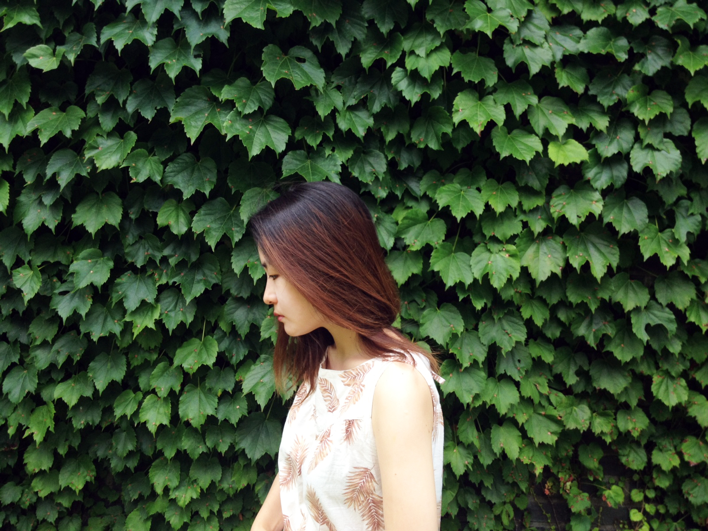

Naky Hwang is a media artist.

Naky loves VR, the medium which envelops your sight with non-body, non-material digital hallucinations giving the perfect immersive experience; a powerful tool that can serve for her work which is spiritual, transcendental, and contemplative.
Her research focuses on possible experiences and the shapes of visual communication in spatial painting, VR.